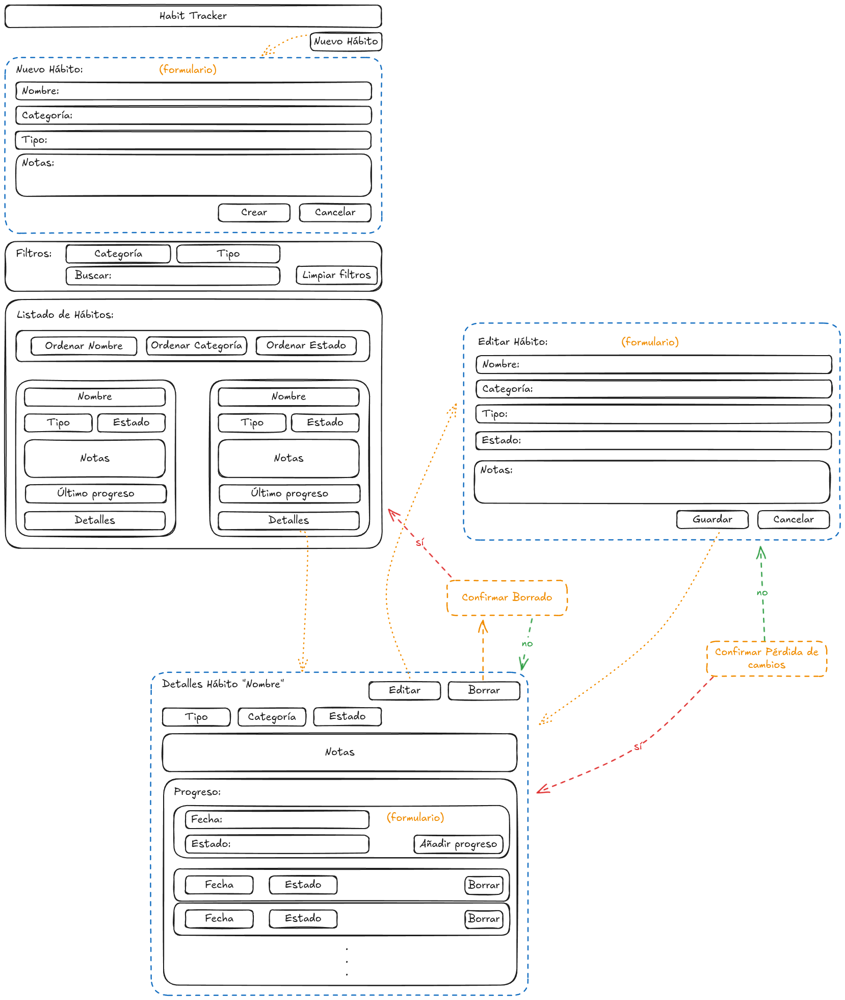

Proyecto 1ª evaluación: Registro de Hábitos (Habit Tracker)
- I. Datos Generales
- II. Estructura y Modelado de Datos
- III. Requisitos Funcionales y Persistencia
- IV. Enfoque en los Resultados de Aprendizaje
- V. Entrega y Documentación
- VI. Evaluación
I. Datos Generales
-
Objetivo
Crear una aplicación de escritorio multiplataforma con una interfaz basada en componentes para gestionar el progreso de hábitos, simulando la persistencia mediante una API REST.
Este proyecto simula un MVP (Minimum Viable Product o Producto viable mínimo), es decir, una versión básica pero funcional de una aplicación real.
El objetivo es centrarse en los aspectos fundamentales del desarrollo de interfaces gráficas y la interacción con servicios de datos, sin entrar en detalles complejos de producción o despliegue.
Este tipo de aplicación es común en el desarrollo de software, donde se busca validar ideas y funcionalidades antes de invertir en un desarrollo completo.
-
Ponderación: 60% sobre la calificación de la primera evaluación.
- Fecha Límite de Entrega: 28/11/2025.
- Resultados de Aprendizaje: RA1, RA3, RA4.
- Repositorio GitHub Classroom: https://classroom.github.com/a/jxCxrpk4
II. Estructura y Modelado de Datos
A. Estructura del Proyecto
- Estructura y componentes: El código debe estar bien estructurado en utilizando componentes y separando archivos HTML, TS y CSS. Se deben utilizar interfaces para representar el modelado de datos.
- Tecnologías Base:
- Electron. La aplicación debe estar preparada para ejecutarse en Electron, aunque no se pide un ejecutable empaquetado.
- Angular 20. Se debe utilizar la última versión de Angular y utilizar Angular CLI para la generación del proyecto y componentes.
- Estilos. Se debe utilizar Bootstrap (u otra librería CSS) para el diseño visual.
- json-server para simular la API REST.
B. Modelado de Datos
La aplicación debe definir un modelo de datos robusto para el hábito y su seguimiento:
1. Interfaz de Hábito Principal (Habit)
| Atributo | Tipo | Notas |
|---|---|---|
id |
string |
Identificador único (proporcionado por json-server). |
name |
string |
Obligatorio. Máximo 50 caracteres. |
category |
string |
Clasificación (ej. Salud, Estudio, Física, etc.). |
goalType |
string |
Tipo de objetivo ('daily', 'weekly', 'monthly'). |
status |
string |
Estado actual ('In Progress', 'Completed', 'Paused'). |
notes |
string |
Máximo 200 caracteres. |
progress |
HabitProgress[] |
Array que almacena los registros históricos. |
2. Interfaz de Progreso Diario (HabitProgress)
Representa el cumplimiento registrado en una fecha específica.
| Atributo | Tipo | Notas |
|---|---|---|
date |
string |
Fecha de registro (Formato ISO Date). ej: '2023-10-15' |
status |
string |
Estado de cumplimiento ('Completed', 'Missed', 'Skipped'). |
3. Datos Iniciales
Se debe proporcionar un conjunto inicial de datos en un archivo db.json para json-server, con al menos 5 hábitos predefinidos que cubran diferentes categorías y tipos de objetivos.
{
"habits": [
{
"id": "1",
"name": "Ejercicio Diario",
"category": "Salud",
"goalType": "daily",
"status": "In Progress",
"notes": "Hacer al menos 30 minutos de ejercicio.",
"progress": [
{
"date": "2025-10-01",
"status": "Completed"
},
{
"date": "2025-10-02",
"status": "Missed"
},
{
"date": "2025-10-03",
"status": "Skipped"
}
]
},
{
"id": "2",
"name": "Leer Libros",
"category": "Desarrollo Personal",
"goalType": "weekly",
"status": "Paused",
"notes": "Leer al menos 3 capítulos por semana.",
"progress": [
{
"date": "2025-09-28",
"status": "Completed"
}
]
},
{
"id": "3",
"name": "Meditación",
"category": "Salud Mental",
"goalType": "daily",
"status": "In Progress",
"notes": "Meditar al menos 10 minutos cada día.",
"progress": []
},
{
"id": "4",
"name": "Aprender un Nuevo Idioma",
"category": "Educación",
"goalType": "monthly",
"status": "Completed",
"notes": "Completar una unidad didáctica cada mes.",
"progress": [
{
"date": "2025-09-15",
"status": "Skipped"
},
{
"date": "2025-10-15",
"status": "Completed"
}
]
},
{
"id": "5",
"name": "Limpiar la Casa",
"category": "Hogar",
"goalType": "weekly",
"status": "In Progress",
"notes": "Realizar tareas de limpieza cada fin de semana.",
"progress": []
}
]
}
III. Requisitos Funcionales y Persistencia
A. Funcionalidades Esenciales
- Listado y Visualización: El listado debe actualizarse automáticamente con los cambios. El estado/progreso del hábito debe representarse visualmente con colores y/o iconos.
- Añadir/Editar: Mostrará un formulario que debe ser validado y debe mostrar los errores.
- La edición debe permitir cancelar y, si hay cambios, pedir confirmación al usuario.
- Eliminar: Debe pedir confirmación al usuario antes de eliminar un elemento.
- Cambiar Estado/Registrar: Debe haber un mecanismo simple para registrar el progreso diario o cambiar el estado del hábito.
- Detalles: Al seleccionar un hábito, se debe desplegar una vista detallada con toda la información, incluyendo el historial de progreso.
- Sin Datos: Si no hay hábitos registrados, se debe mostrar un mensaje adecuado e instrucciones para añadir el primer hábito.
B. Filtrado y Ordenación
- Filtros: Se deben poder combinar varios filtros: por Categoría, Tipo de Hábito, y Búsqueda textual (filtrando si el texto está contenido en el
nameonotes).- Debe existir un botón para limpiar filtros.
- Si no hay resultados tras aplicar los filtros, se debe mostrar un mensaje adecuado.
- Ordenar: Los elementos deben ser ordenables en orden ascendente y descendente por, al menos, tres atributos (ej. Nombre, Categoría y Estado).
C. Persistencia (API REST Simulada)
El almacenamiento se realiza mediante json-server (simulando una conexión asíncrona a la base de datos):
- Operaciones Asíncronas: Las operaciones de persistencia (C/R/U/D) deben realizarse en segundo plano, sin bloquear la interfaz.
- Feedback: Se debe mostrar un mensaje de éxito o error después de cada operación de persistencia (guardar/cargar).
- Llamadas HTTP: La aplicación Angular debe utilizar
HttpClientpara realizar peticiones (GET, POST, PUT/PATCH, DELETE) para gestionar los datos.
D. Mockup de ejemplo
Se proporciona un mockup (boceto) de ejemplo para guiar el diseño visual de la aplicación, aunque no es obligatorio seguirlo y se pueden hacer modificaciones según las decisiones de diseño.

Generado con la herramienta Excalidraw - Enlace al boceto
IV. Enfoque en los Resultados de Aprendizaje
El cumplimiento de los Criterios de Evaluación (CE) debe ser visible en el desarrollo.
RA 1: Generación y Adaptación de Interfaces Gráficas
El proyecto debe demostrar la capacidad de manejar herramientas y adaptar el código generado o base:
- Uso de Herramientas (CE a, c): Se debe documentar el análisis de las herramientas (Angular CLI, Electron, librerías) utilizadas para la generación de interfaces. Se debe utilizar el concepto de layout para ubicar los componentes del interfaz (como si se usara un editor visual).
- Modificación del Código (CE e, f, d): Se debe analizar y modificar el código generado por Angular/TypeScript/HTML para integrar la lógica de negocio y las llamadas a servicios de datos. Las propiedades de los componentes deben modificarse para adecuarse a las necesidades de la aplicación (ej., mostrar el estado visualmente).
- Control de Eventos (CE g): Se deben asociar las interacciones de usuario (como hacer clic en el botón de registro de un hábito) con las acciones (métodos TypeScript) correspondientes.
RA 3: Creación de Componentes Visuales Reutilizables
El diseño en Angular facilita la creación de componentes reutilizables:
- Creación de Componentes (CE b, h): Se deben crear al menos dos componentes visuales personalizados y reutilizables (ej.,
HabitCardpara cada hábito,HabitProgresspara la visualización cada elemento de progreso) . La aplicación debe hacer uso de estos componentes en el interfaz. - Definición (CE c, d): Se deben definir claramente los métodos y propiedades (utilizando
@Input()en Angular) con asignación de valores por defecto si es necesario. Se deben determinar los eventos a los que responde el componente (utilizando@Output()en Angular) y asociar las acciones. - Pruebas (CE e): Se deben realizar pruebas sobre los componentes desarrollados para verificar su funcionamiento de forma aislada.
- Documentación y Empaquetado (CE f, g): Se deben documentar los componentes creados (propiedades, métodos, eventos). Se debe simular el empaquetado de los componentes.
RA 4: Diseño, Usabilidad y Accesibilidad
El diseño debe estar planificado con criterios de calidad para el usuario final:
- Estándares y Coherencia (CE a, b, c, d): Se deben identificar los principales estándares de usabilidad y accesibilidad y valorar su importancia. Se deben diseñar los menús y la distribución de acciones (filtros, botones de comando) siguiendo un criterio coherente y estándares establecidos.
- Controles y Legibilidad (CE e, f, g): Se debe asegurar la distribución adecuada de los controles. Se debe utilizar el tipo de control más apropiado en cada caso (ej., un toggle para objetivos binarios, input numérico para contables, dropdowns para categorías ). El aspecto de la interfaz (colores, fuentes) debe garantizar la legibilidad.
- Feedback y Pruebas (CE h, i): Se debe verificar que los mensajes generados por la aplicación (errores de validación de formulario, mensajes de éxito/error de persistencia) sean adecuados en extensión y claridad. Se deben realizar pruebas para evaluar la usabilidad y accesibilidad de la aplicación (ej., contraste de colores, tamaño de fuentes, mensajes claros, etc.).
V. Entrega y Documentación
-
Repositorio de GitHub Classroom con todo el código fuente del proyecto:
La entrega se realizará a través del repositorio creado en GitHub Classroom: * [https://classroom.github.com/a/jxCxrpk4][https://classroom.github.com/a/jxCxrpk4]
En caso de problemas técnicos con GitHub Classroom, se debe notificar al profesor con antelación a la fecha límite de entrega para buscar una solución adecuada.
-
Documentación: Incluir archivo
README.mden la raíz del proyecto con la siguiente información:- Nombre del proyecto, Nombre y apellidos del alumno o alumna.
- Detalles de implementación, decisiones tomadas y dificultades encontrados.
- Justificación de las decisiones de diseño respecto a la usabilidad y accesibilidad (RA 4).
- Documentación técnica de los componentes visuales creados (RA 3).
- Instrucciones para ejecutar la aplicación (instalación de dependencias, comandos para iniciar
json-servery la aplicación en Electron). - Validación de Requisitos. Se debe incluir una lista de verificación indicando el cumplimiento de cada requisito funcional.
- Pruebas realizadas y resultados obtenidos.
- Seguimiento: El repositorio de GitHub Classroom debe reflejar el progreso del proyecto.
- Se debe realizar al menos 1 commit por cada día de clase, los mensajes deben tener sentido, ser concisos e informativos.
- Ejecución del Proyecto: La aplicación debe poder abrirse sin errores y debe estar preparada para ejecutarse en Electron (aunque no se pida un ejecutable empaquetado).
- Calidad del Código: El código debe estar limpio, utilizar nombres de variables, métodos y clases significativos, e incluir comentarios donde sea necesario para mejorar la comprensión.
VI. Evaluación
La evaluación se basará en:
- Cumplimiento de los requisitos funcionales.
- Calidad del diseño y usabilidad de la interfaz.
- Implementación técnica y uso adecuado de tecnologías.
- Documentación y justificación de decisiones de diseño.
- Enfoque y cumplimiento de los Resultados de Aprendizaje (RA 1, RA 3, RA 4).
- Calidad del código y buenas prácticas de desarrollo.
- Seguimiento del proyecto en el repositorio de GitHub Classroom.
- Entrega puntual del proyecto.
Notas Importantes
En caso de existir dudas acerca de la autoría del proyecto, o el uso indiscriminado de herramientas automáticas de generación de código, se podrá solicitar una entrevista técnica para verificar los conocimientos del alumno o alumna sobre el desarrollo realizado.
Cualquier intento de plagio o copia será sancionado según las normas académicas vigentes.
No se aceptarán proyectos entregados fuera de plazo o que no hayan cumplido los requisitos de seguimiento en el repositorio.
En caso de incidencias técnicas, se debe notificar al profesor con antelación a la fecha límite de entrega para buscar una solución adecuada.